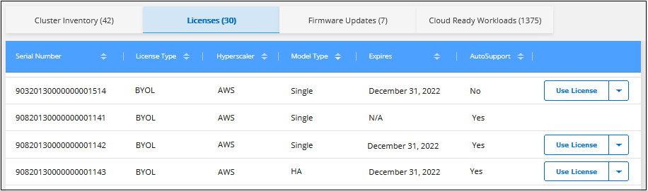
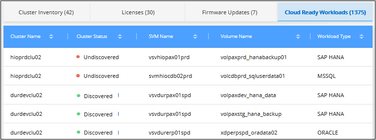

문서 변경 요청
문서 변경 요청 이 페이지 편집
이 페이지 편집 기여하는 방법 자세히 알아보기
기여하는 방법 자세히 알아보기Active IQ 데이터를 사용하여 ONTAP 클러스터 관리
Cloud Manager의 검색 페이지에서는 온프레미스 환경에서 검색되지 않은 ONTAP 클러스터를 표시하고, 클러스터에 업데이트된 디스크 또는 쉘프 펌웨어가 필요한지 여부, 온프레미스 시스템을 구입할 때 부여된 모든 Cloud Volumes ONTAP 라이센스를 사용하고 있는지 여부를 확인할 수 있습니다. 이 정보는 에서 Cloud Manager에 제공됩니다 "Active IQ 디지털 자문업체".
사용하지 않는 Cloud Volumes ONTAP 노드 기반 라이센스 보기
구입한 대부분의 사내 ONTAP 스토리지 시스템 패키지에는 무료 Cloud Volumes ONTAP 노드 기반 라이센스가 포함되어 있으므로 Cloud Manager에서 NetApp 클라우드 스토리지 오퍼링을 사용해 볼 수 있습니다. 라이센스를 사용하여 새 Cloud Volumes ONTAP 인스턴스를 생성하거나 기존 Cloud Volumes ONTAP 인스턴스에 라이센스를 적용하여 용량을 368TiB까지 확장할 수 있습니다.
NetApp Support 사이트 자격 증명을 기반으로 사용하지 않는 Cloud Volumes ONTAP 라이센스가 있는지 여부를 확인할 수 있습니다.

|
노드 기반 라이센스의 기간은 라이센스가 발급된 후 다음 달의 첫날에 시작됩니다. 예를 들어, 2021년 12월 15일에 노드 기반 BYOL 라이센스를 취득한 경우, 라이센스 기간은 2022년 1월 1일(다음 달의 첫 번째 날)부터 시작됩니다. |
-
Cloud Manager에서 * Discovery * 탭을 클릭합니다.
-
페이지 하단의 * Licenses * 탭을 클릭합니다.

사용되지 않는 각 라이센스에 대해 * 사용권 사용 * 버튼이 나타납니다.
-
사용권을 활성화하고 사용하려면 * 사용권 사용 * 을 클릭합니다.

사용 가능한 라이센스 사용 옵션에 대한 자세한 내용은 아래 작업을 참조하십시오.
사용하지 않는 Cloud Volumes ONTAP 라이센스 사용
사용하지 않는 라이센스를 사용하여 새 Cloud Volumes ONTAP 인스턴스를 만들거나 기존 Cloud Volumes ONTAP 인스턴스에서 라이센스 용량을 확장할 수 있습니다. 라이센스 용량은 368TiB입니다.
expires_column은 라이센스가 활성화된 마지막 날짜를 나타냅니다. 새 Cloud Volumes ONTAP 시스템을 생성할 때 라이센스가 만료되는 날짜입니다. 기존 Cloud Volumes ONTAP 시스템을 업데이트할 때 기존 라이센스가 연장되는 기간을 나타냅니다.
라이센스 유형 _, _ 하이퍼스케일러 _ 및 _ 모델 유형 _ 열은 Cloud Volumes ONTAP 라이센스의 유형을 설명합니다. 예를 들어, * BYOL | Single | Azure * 는 "Microsoft Azure"에 구축된 "단일 노드" Cloud Volumes ONTAP 시스템에 대한 "BYOL | Single | Azure * 라이센스를 "BYOL" 방식으로 사용한다는 것을 의미합니다. 이 열에 표시될 수 있는 값은 표에 나와 있습니다.
| 열 | 값 |
|---|---|
라이센스 유형 |
PAYGO BYOL |
하이퍼스케일러 |
Azure AWS GCP 모든 공급자 |
모델 유형 |
단일 HA |
new_Cloud Volumes ONTAP 시스템을 생성할 때 이는 구축하는 시스템의 유형입니다. 예를 들어, 샘플 라이센스(* BYOL | Single | Azure *)를 사용하면 Azure에서 최대 368TiB의 사용 권한을 가진 단일 노드 Cloud Volumes ONTAP 시스템을 생성할 수 있습니다. 이 라이센스를 사용하여 HA 시스템을 생성하거나 AWS에 인스턴스를 구축할 수 없습니다.
existing_Cloud Volumes ONTAP 시스템을 업데이트할 때 기존 라이센스의 용량을 확장할 수 있는 시스템 유형을 나타냅니다. 샘플 라이센스를 다시 사용하면 Azure에서 단일 노드 Cloud Volumes ONTAP 시스템에 대한 라이센스를 확장할 수 있습니다. 이 라이센스를 사용하여 HA 시스템 또는 AWS에 구축된 인스턴스에 대한 라이센스를 확장할 수 없습니다.
사용하지 않는 라이센스로 새 Cloud Volumes ONTAP 시스템을 생성합니다
다음 단계에 따라 사용하지 않는 라이센스로 새 Cloud Volumes ONTAP 인스턴스를 만듭니다.
-
사용권 사용 * 을 클릭하고 새 Cloud Volumes ONTAP*에 대한 사용권 사용 * 을 선택합니다.
-
"사용권 사용…" 페이지에서 사용권 정보를 확인하고 * 사용권 사용 * 을 클릭합니다.
클라우드 공급자와 노드 수가 모두 라이센스에 의해 정의되기 때문에 대부분의 경우 Cloud Volumes ONTAP 시스템의 작업 환경을 만들기 위한 * 세부 정보 및 자격 증명 * 페이지로 이동합니다.
"모든 제공업체"로 정의된 라이센스를 사용하는 경우 * 세부 정보 및 자격 증명 * 페이지를 완료하기 전에 먼저 클라우드 공급자를 선택할 수 있도록 * 위치 선택 * 페이지로 이동합니다.
-
다음 단계에 따라 작업 환경과 첫 번째 볼륨을 생성합니다.
Cloud Volumes ONTAP 시스템을 구축하는 클라우드 공급자에 따라 다음 섹션을 참조하십시오.
기존 Cloud Volumes ONTAP 시스템의 라이센스 용량 확장
무료 라이센스 중 하나의 라이센스 요구 사항과 일치하는 현재 구축된 Cloud Volumes ONTAP 시스템(동일한 클라우드 공급자, 노드 수 등)이 있는 경우 다음 단계에 따라 라이센스 용량을 368TiB까지 확장할 수 있습니다.
-
사용권 사용 * 을 클릭하고 * 기존 Cloud Volumes ONTAP에 사용권 추가 * 를 선택합니다.

-
"라이센스 추가…" 페이지에서 라이센스를 확장할 Cloud Volumes ONTAP 시스템을 선택하고 * 라이센스 추가 * 를 클릭합니다.
확인 대화 상자가 표시됩니다.

-
창을 닫고 검색 페이지로 돌아가려면 * 닫기 * 를 클릭하고, 해당 시스템의 라이센스에 대한 자세한 내용을 보려면 Cloud Volumes ONTAP 라이센스 페이지로 이동하려면 링크를 클릭하십시오.
새 디스크 및 쉘프 펌웨어 다운로드 중
검색된 ONTAP 클러스터에 쉘프 또는 디스크 펌웨어가 업데이트되어야 하는지 여부를 확인할 수 있습니다. Ansible 플레이북을 다운로드하여 펌웨어를 업그레이드할 수 있습니다.
-
참고: * 새 펌웨어를 보고 다운로드할 수 있는 기능은 특정 지원 계획에 가입한 경우에만 사용할 수 있습니다.
-
검색 페이지에서 * 펌웨어 업데이트 * 탭을 클릭합니다.

클러스터에 새 펌웨어가 필요한 경우 * 모두 다운로드 * 버튼이 나타납니다.
-
모두 다운로드 * 를 클릭하고 zip 파일을 저장합니다.
-
zip 파일의 압축을 풀고 에 대한 다음 지침을 참조하십시오 "스토리지 시스템 펌웨어를 업데이트합니다".
펌웨어가 업데이트됩니다. 다음에 ONTAP 시스템에서 Active IQ로 AutoSupport 메시지를 보내면 펌웨어 업데이트 페이지의 상태가 업데이트되어 업데이트가 더 이상 필요하지 않음을 표시합니다.
클라우드의 대상이 되는 온프레미스 워크로드 보기
특정 워크로드 또는 볼륨은 온프레미스 ONTAP 클러스터에서 Cloud Volumes ONTAP 시스템으로 이동하는 데 적합합니다. 이러한 이점에는 비용 절감과 성능 및 복원력 개선이 포함됩니다. Cloud Ready 워크로드_tab은 검색된 ONTAP 클러스터에서 이러한 워크로드의 목록을 제공합니다.

이 페이지에서 제공되는 지원되는 워크로드는 SAP, SAP HANA, Oracle, 파일 공유 및 SharePoint입니다.
_Lift & Shift_는 앱을 클라우드로 마이그레이션하는 접근 방식입니다. 다시 앱을 설계하지 않고 애플리케이션과 관련 데이터를 클라우드 플랫폼으로 이동하는 것을 의미합니다. 에 대한 자세한 내용을 참조하십시오 "리프트 앤 시프트".